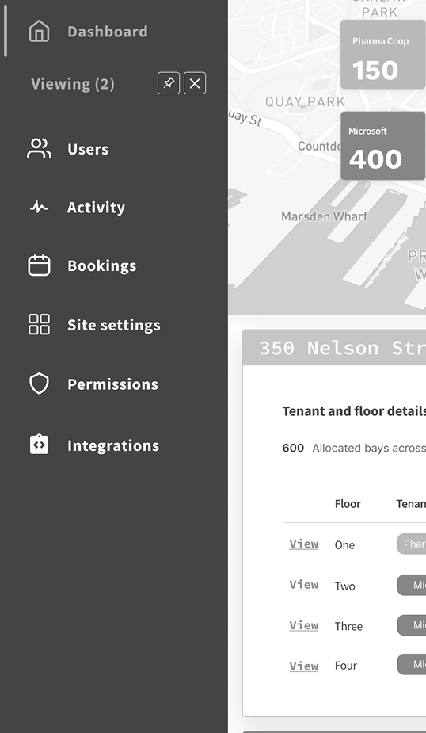

Revamping the Dashboard
for a client’s parking site management application
approach
In an interview workshop setting with the client, I facilitated and adopted the perspectives of two key individuals for user interviews:
- Subject matter expert & Product ownerin order to understand the underlying business logic and its product goals and value proposition.
- New userin order to define user flows of daily users, what problems they are trying to solve and why it’s needed.
Then sharing these design changes with the product and development teams for critical feedback before implementing them as a prototype.
Ultimately, the potential buyers gained a clearer understanding of the application's value right from the start, as confirmed by user feedback.
Map as Initial Anchor
As a rule, existing static table data was transformed into charts to reduce visual clutter and improve data comprehension. Orginally entire pages were dedicated to static information.
To avoid information overload, users are introduced to data content gradually, depending on where they are on the user flow.
- Existing table data was transformed into charts to reduce visual clutter and improve data comprehension.
- Pie charts frame the rest of the content displayed in the dashboard cards.
- Interacting with each pie chart reveals specific location details intentionally designed in the same map to avoid confusion.

Parking site comparison

Instead, selecting details about a parking location via the Dashboard pie chart introduces the user to all the associated static datasets gathered from the multiple menu-items. This reduced the number of menu-items.
- To illustrate that the user is now comparing dataset details between locations, two cards representing respective location appear upon clicking the pie chart.
- The side bar menu is updated to show dedicated space for each parking site and actionable elements (close icon, pin icon) to encourage interaction.


- To solve for secondary menues and wizard forms, I advocated for applying visuals that represent physical documents normally associated with the task, for example, physical drawings of parking sites. By matching the interface with users' mental models, users are more likely to quickly learn how to complete the respective tasks directly in the application.
Bespoke features were lost in the sheer amount of data tables across the 13 menu-items and with little affordances to guide users, it was clear to see information architecture was one of the UX gaps. The following steps details my approach to finding value and prioritizing content for the purpose of designing navigation for the dashboard.
Menu items in the side bar were listed somewhat arbitrarily with each menu item related to a specific user task. Examining each screen provided insight into the kinds of tasks users completed.
What can the user see?
What actions can the user perform (i.e. searching, exporting, etc.)?
Why is the information valuable for users?
What does the user want to do with the information?
Would the user need to perform any actions prior?
Defining the purpose of each screen helped contextualize the interviews with stakeholders and identify relationships between product, people, and the system. Interview answers clarified stakeholder assumptions regarding the target user.
Understanding the relationship between location of parking and vehicle status
and
how the application shows this relationship systemically
vs
the user’s mental model for completing their roles and responsibilities in this industry

Each of the 13 menu-items display content to help the target user complete related tasks. The ability to complete a task varies by the number of actions the user must take.
Example task: opening physical parking gate
Menu-items:
Site settings, Activity, Revenue
Example task: Adding a new promotional parking rate
Menu-items:
Rates, Transient, Permissions, Users, Space Management
Example task: download data table
Menu-items:
History, Validation, Bookings
Example task: update fee amount on table row
Menu-items:
Billing
These menu-items reflect tasks of highest priority and therefore are represented on the interface over other tasks.
Site settings, Activity, Revenue, Rates, Transient, Permissions, Users, Space Management
Of the narrowed down list of menu-items, some interactive components triggered changes to datasets and data files in other areas of the system without the user's knowledge, confusingly.
For example, if a user updated the parking fee attributes for a single vehicle, it could override other billing charges across accounts (unbeknownst to the user who made the change).
Defining relationships by the following tasks further reduced the number of menu-items to 4 (see below) and led to discovering ways to add affordances for the dashboard screen:
(1) the task the user completes in a menu-item, (2) the number of interactions associated to each menu-item, and (3) the impact the interaction has on other menu items
Space management and Site settings, Activity and Users
Relationship between menu-items
The simpler the relationship, the better the content will be for a dashboard.

The higher the priority and the fewer interaction actions associated to it, the better the content will be for a dashboard.

The higher the priority and the less it triggers unknown changes across the system, the better the content will be for the dashboard.
- Apply affordances to guide user around one dataset to another
- Find opportunity to use spatial assets to reduce information overload
- Use visuals and typography to organize different types of menu-item content
- Where important information is far too complex to be in a dashboard, avoid showcasing more than necessary

The biggest challenge was the difficulty in mapping attributes and contingencies for dataset relationships by business value in a simpler way than how it was initially shown.
Besides feedback from product owners, defining the dataset by universal heuristic patterns (ex. more information leads to more confusion) was a quick win that ultimately guided the design direction of the rest of the application towards a "less is more" solution.
Stakeholders had a general idea of the kind of information they wanted to see as part of the final design. I was hesitant to accept the client's design requests without fully comprehending why (if at all) the changes would benefit the user.
In most cases, I would advocate for the end-user and insist on defining user needs with the client. However, in this case, I chose to trust the client's word because they were by nature and as an office culture: open, collaborative, and resourceful for all the user data that was lacking. Such an environment allowed me to comfortably clarify or update other parts of the design without delays to the overall contract timeline. It made for a pleasureable work experience with the teams involved. I try to find (and reflect in my own engagment and behaviour) this empathetic way of working together.